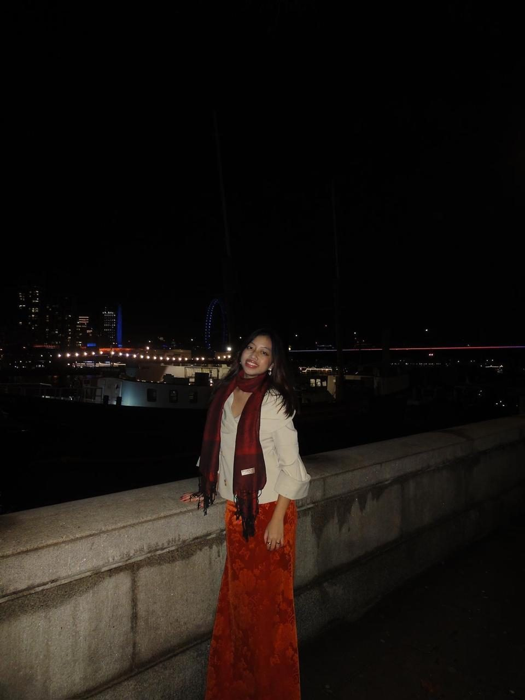
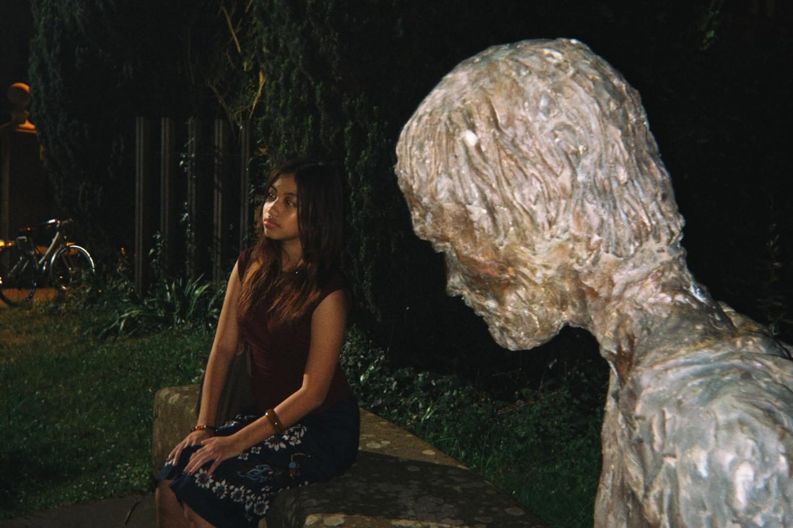
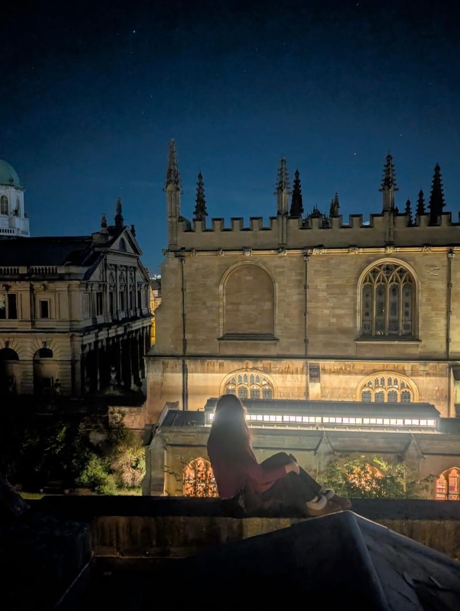
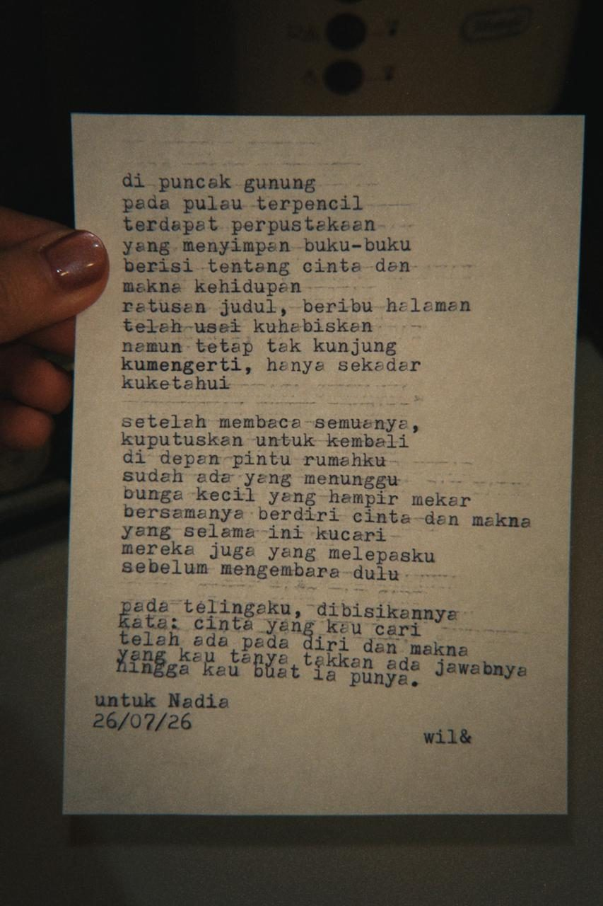
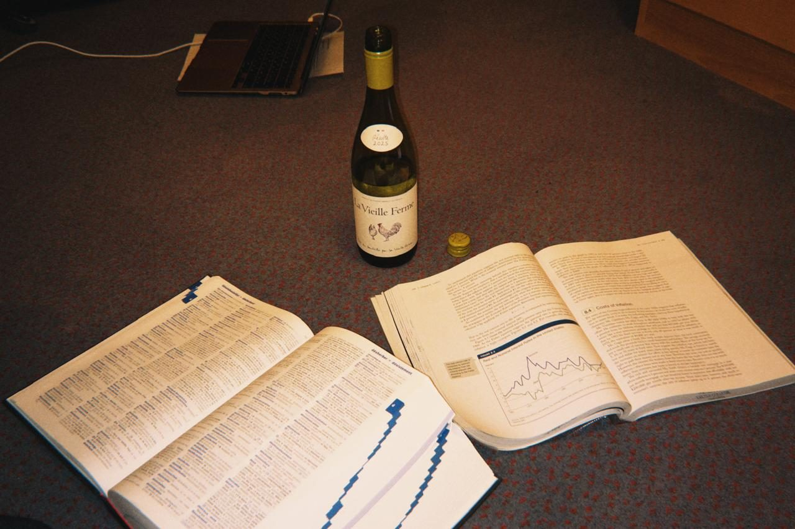
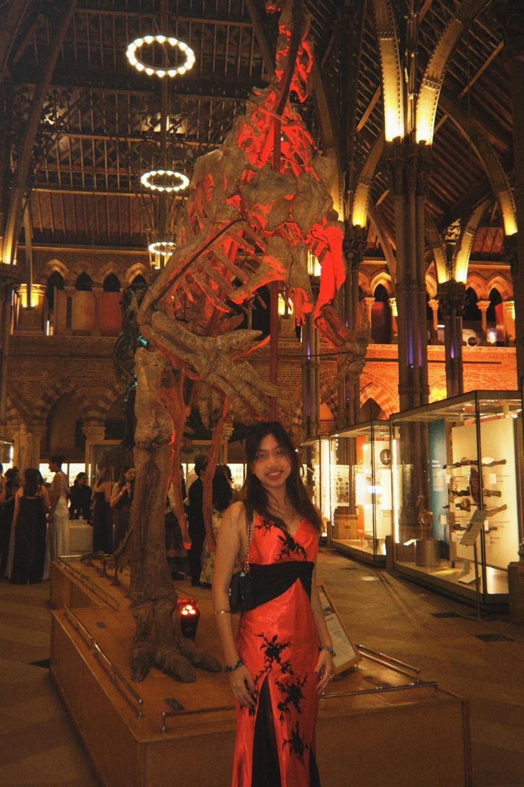
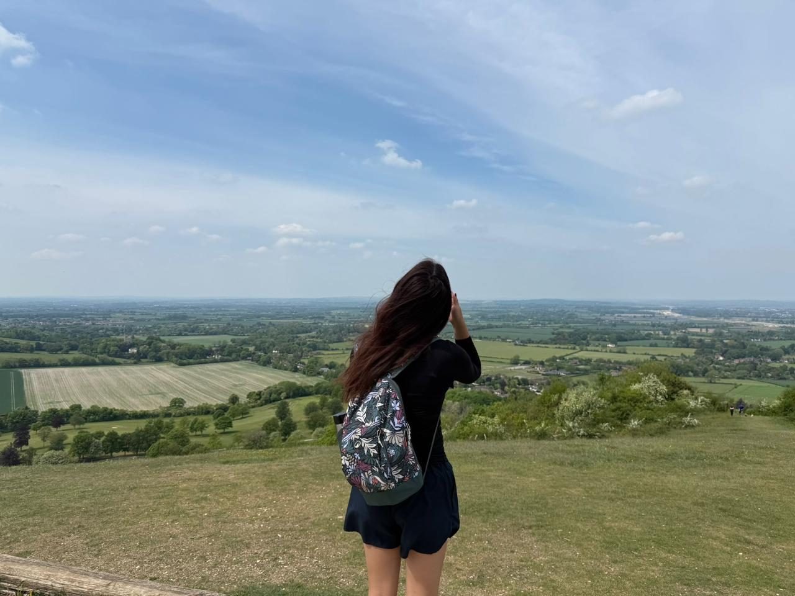
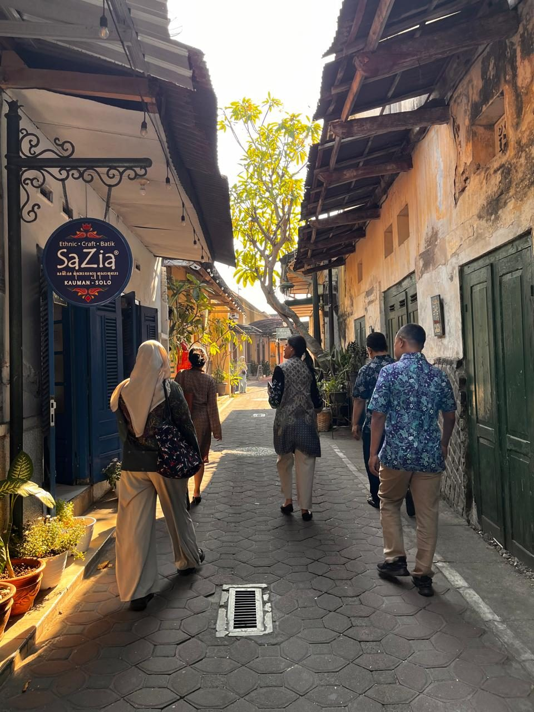
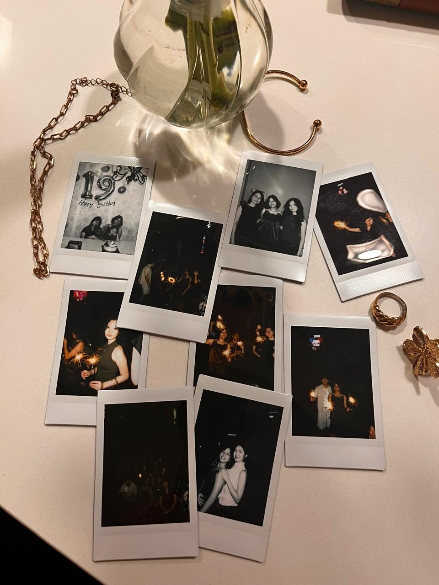

Ten Words
Working principles, 2026
I enjoy synthesis far more than specialisation. I have no desire to become the world's foremost expert on one narrow subject; I would much rather always be learning extremely quickly, jumping from curve to curve. Talk to the specialists, synthesise conflicting information, form a judgement, move on to the next problem.
I don't have to be the most intelligent person in the room, but I must be surrounded by intelligent people I can always learn from.
I have a strong sense of wonder, and I look for professionalised curiosity: a life that lets me ask strangers absurd numbers of questions about their lives and their businesses.
I like people. I like observing different types of people, and building a catalogue of labels and types.
I want judgement, not merely analysis. Endless philosophical qualification frustrates me. Eventually I want to know that A is not B and 2+2=4. Only aesthetically do I enjoy suspension and ambiguity.
Advisory roles interest me as a way to learn. Eventually, I want to fully own my decisions, with skin in the game.
I am extremely interested in power and capital. I want to be in the room where allocation decisions happen; I enjoy proximity to consequential things.
I am also extremely suspicious of them. I am hyper-aware of the structures that govern our world, and of how their claws reach into absolutely everything. I hate bureaucracy. I despise oligarchy. I hold both of these at once.
I need to know that I am changing the world in some way. I want to work with something real and make something that lasts.
I cannot be aimless. I need a greater cause, and I do not confuse means for ends.
Ideas have become cheaper, so I have grown more execution-driven. I adapt with the times.
I fear becoming an enabler while going nowhere myself; becoming the critic without ever having produced anything to be critiqued.
I fear mediocrity. I fear complacency, and the slow exsanguination of ambition.
I want many, too many things. I aspire to be more audacious, and apathetic enough to what people say that I can care more about what I care about. I would rather my actions hold up in retrospect than be applauded in the moment.
I have a natural aversion to what is conventional and socially conditioned. Agency matters to me: I must have full awareness of my decisions and their justifications. I reject romanticised narratives with no basis. I rebel against romanticised rebellion.
I am obsessed with authenticity as a loaded term. I want to see the truth of the matter, and the truth of a person, and I think it is important that authenticity is not one-dimensionality.
I see the world in dualities and tensions, and I enjoy transcendence. I do not fear great failures if they mean I will taste great success.
I do not fear non-linearity. I trust the integrity of my motivations, and I understand I will never obtain perfect epistemic certainty. I am a metamodernist, which mostly means I trap myself in infinite ironic regress.
I love beautiful things, but most of all I am a materialist for beautiful experiences. I collect memories and stories, and I polish them into personal myths.
I am perpetually interested in the altered states of ordinary things. I improvise the way a jazz pianist knows the discordant chords will coalesce into a melody.
About
ChicagoJakartaOxford
Reading Philosophy, Politics and Economics at Oxford.

Gallery
Nine photographs






